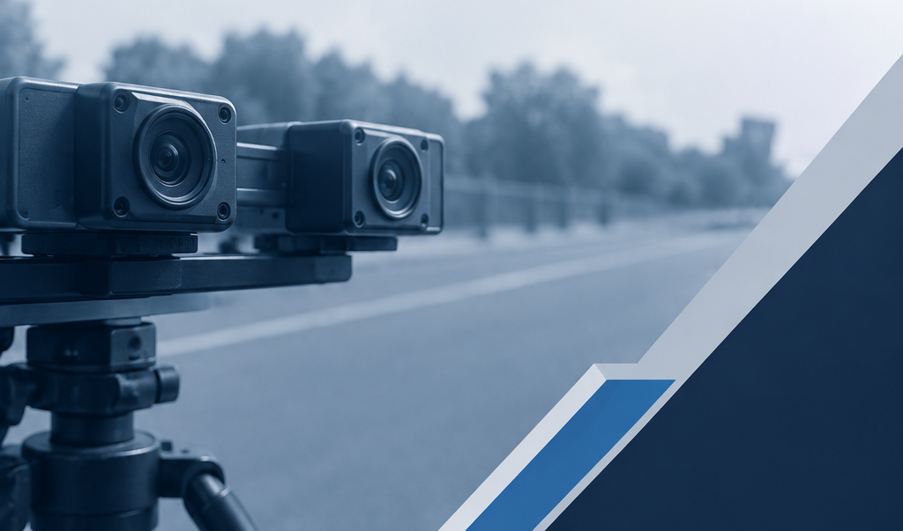

Stereo Disparity and Depth Estimation
Estimating disparity and relative depth from rectified stereo image pairs using classical stereo matching and RAFT-Stereo.
Contributors
H.M.K.I. Herath · K.M.M.Y.K. Kumarasinge · S.B.N.S. Samarawickrama · S.D.M.P. Sandanayake
Project Overview
This project compares StereoBM, StereoSGBM, pre-trained RAFT-Stereo, and fine-tuned RAFT-Stereo for dense stereo correspondence and relative depth estimation.